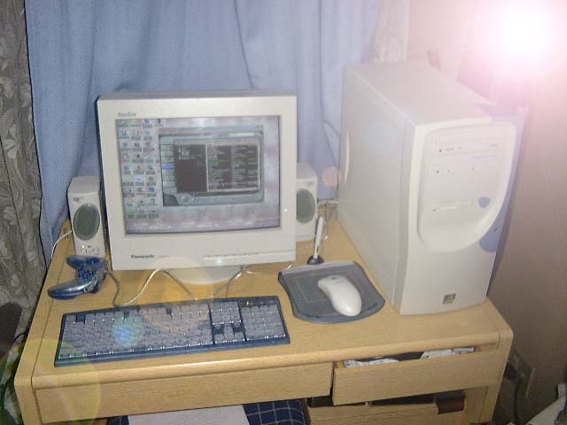

ここでぼくにとって初めての自作パソコンを紹介します。自分で作っただけあってやっぱりかなりかわいいです。
作ろうとしたきっかけは、いままで使っていたノートパソコンの性能では 最近のソフトウェアが動かないことに気付いたこと。
CPUはPentiumIIIの550MHz。これは前のパソコンの4倍ほどの速さ。
メモリは128Mbyte×2の256Mbyte。前のパソコンの8倍。
HDDは20Gbyte。これは前のパソコンの16倍ほど。
そのほか、CD-RW、タブレットつきマウス、DVDなどの機能も。うーん、すばらしい。
ちなみにマザーボードはAX64pro、ビデオカードがGeForce2